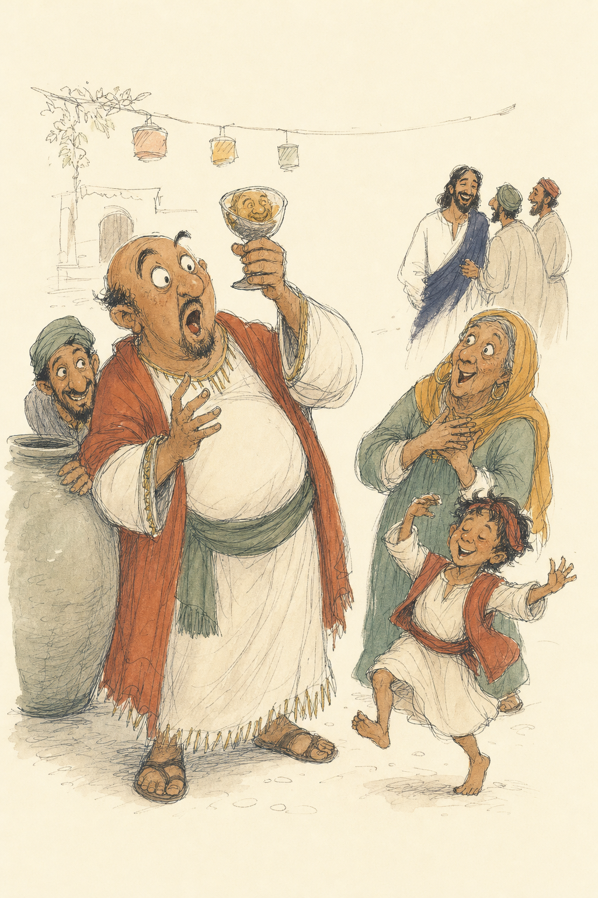
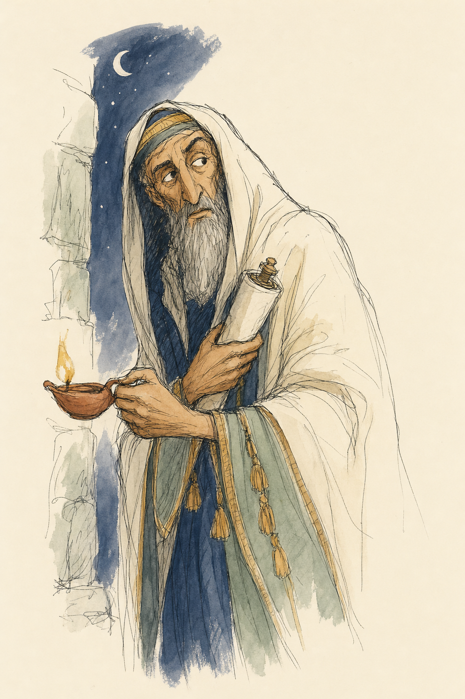
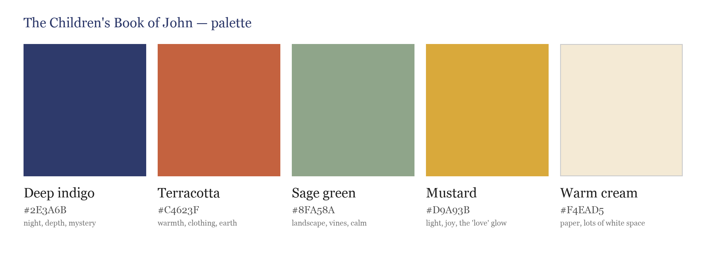

Hi Nadine! Everything for the two pilot pictures is here. Please start with the brief.
Rough composition sketches (tap for full size). These are loose starting points only, so please re-compose freely in your own style:


